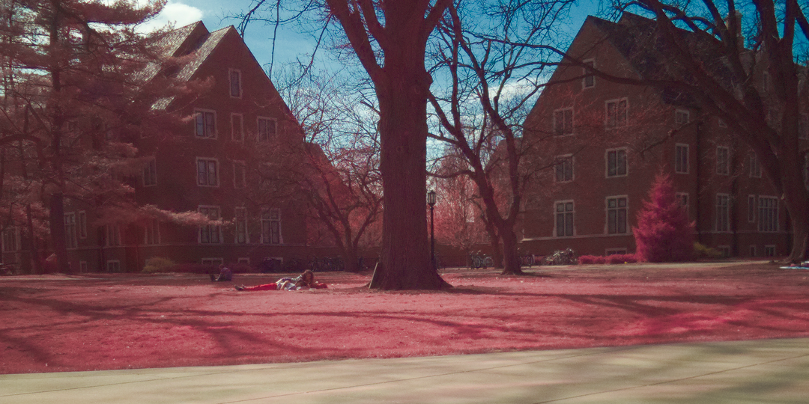
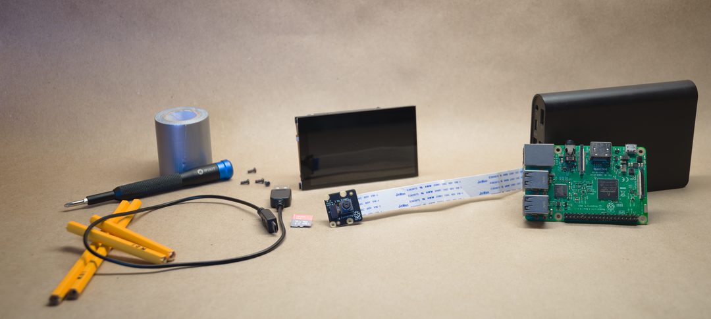
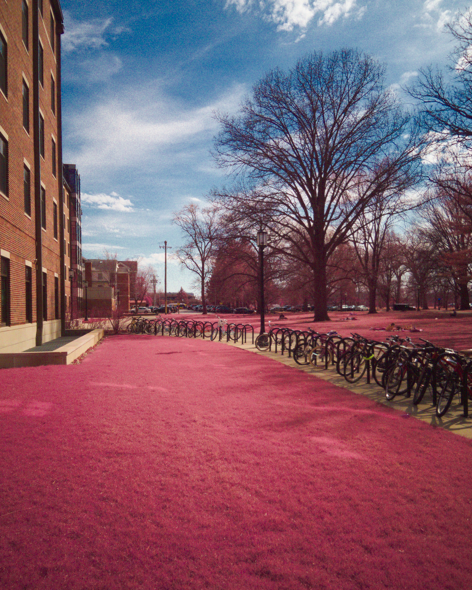

Infrared Photography
During my first year at Purdue, I became fascinated by the Kodak Aerochrome film. This film stock has been out of production for nearly two decades, but had been used for military and ecological applications. In short, objects reflect infrared light in unique ways, so if that can be represented in color, camouflage can be easily defeated and forest health can be effectively estimated. In recent times, digital infrared photography has made the film obsolete for all but the most niche artistic purposes.
I had no aerochrome film, but I did have a Raspberry Pi Camera Module which featured no infrared filter installed. Most digital cameras block IR light so that photos look natural - the sensor can see IR if that filter isn’t there. So, I assembled the Pi and the module with a battery bank into a handheld package, then wrote a Python script to display camera information when a display is connected and activate the camera through a simple keyboard press.
With images captured, I applied some RAW photo processing to more closely emulate the Aerochrome look. Many objects have true-to-life colors, unless the object is highly IR reflective. Grass, trees, and most plants are. You can see the results below.
